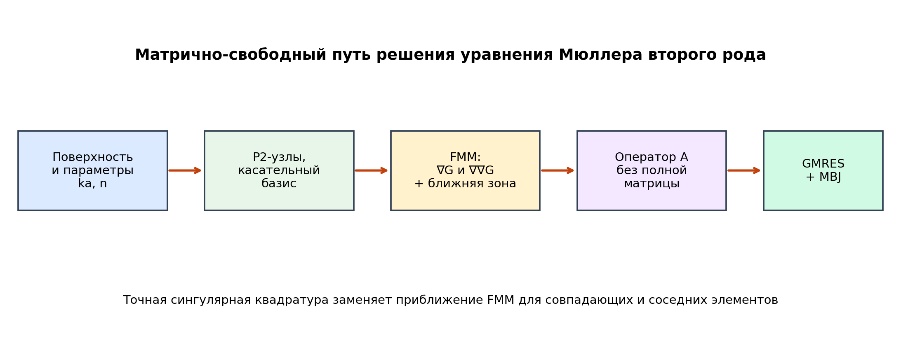
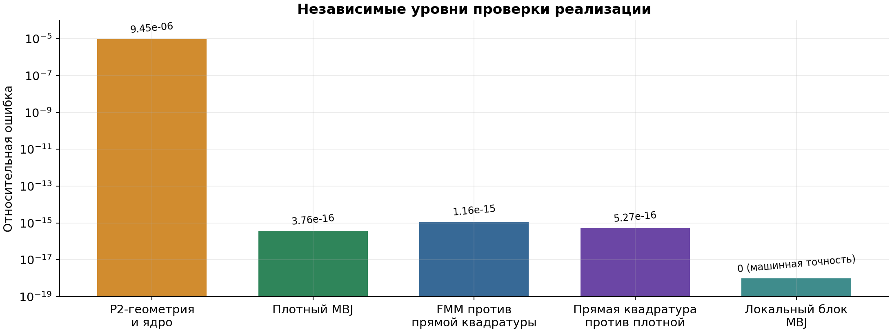
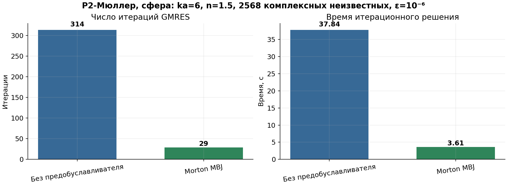
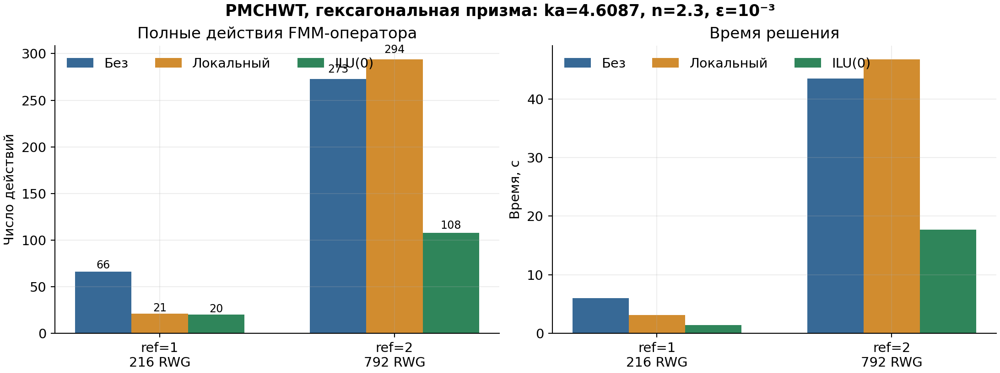

Работа началась с поиска универсального предобуславливателя для электромагнитных гранично-элементных систем. В процессе были доведены до воспроизводимого состояния импорт нейросетевого GraphSAI, несколько классических контрольных методов и отдельная узловая P2-реализация уравнения Мюллера второго рода. Последняя дала наиболее сильный подтверждённый результат.
0efded5 и видимый поверх неё набор изменений;
Исходная рабочая директория накопила большое число расчётов, бинарников, промежуточных
экспериментов и файлов нескольких направлений. Это затрудняло ответ на простой вопрос:
какие изменения действительно нужны поверх опубликованной версии BEM-CPP. Поэтому
удалённый репозиторий был заново клонирован, его main проверен по хешу, а
законченные изменения перенесены выборочно. Папка runs/, кэши и собранные
бинарники не переносились.
| Направление | Что добавлено | Статус |
|---|---|---|
| GPU/FMM | Градиент и симметричный Гессиан; объединённый проход; точная ближняя зона. | Проверено CUDA-тестом. |
| PMCHWT | Правое GPU-предобуславливание, GraphSAI, ILU(0), локальный метод, матрица масс, контрольное возведение оператора в квадрат. | Рабочие и экспериментальные режимы явно разделены. |
| P2-Мюллер | Новая узловая дискретизация второго рода, плотный и FMM-пути, MBJ, правая часть и дальнее поле. | Физически и алгебраически проверено на сферах. |
| Нейросетевое обучение | Экспорт точных локальных блоков и отдельный путь обучения обратных MBJ-блоков. | Обучение подготовлено; итоговый ускоряющий чекпоинт ещё не получен. |
В чистую версию включался код, если для него выполнено хотя бы одно из условий: он необходим для сборки P2-Мюллера; покрыт автоматической проверкой; нужен для воспроизведения подтверждённой таблицы; либо представляет актуальный производственный путь импорта нейросетевого предобуславливателя. Незавершённые расчёты не превращались в «результат» и в численные таблицы не попали.
--system muller2 на RWG-функциях
не считается эквивалентом новой узловой P2-формулировки. Он сохранён как отдельный
исторический эксперимент.
На границе диэлектрической частицы ищутся эквивалентные электрический J и магнитный M поверхностные токи. В каждой P2-точке хранятся две касательные компоненты каждого тока. Поэтому при Np узлах система содержит 4Np комплексных неизвестных: J₁, J₂, M₁ и M₂ в локальном касательном базисе.
Здесь G обозначает матрицу масс P2-базиса, а K₁ и K₂ — интегральные операторы, полученные из градиентов и вторых производных скалярной функции Грина Гельмгольца. «Второго рода» означает структуру «невырожденная локальная часть плюс более компактный интегральный оператор». Это обычно даёт более устойчивый спектр, чем уравнения первого рода, но не устраняет необходимость предобуславливания на больших электрических размерах.
Каждый треугольник содержит шесть узлов: три вершины и три середины рёбер. Те же квадратичные функции формы интерполируют геометрию и токи. Нормаль строится из метрических производных поверхности, затем в каждом узле формируется ортонормированный касательный базис. Это позволяет хранить только физические касательные компоненты и не вводить лишнюю нормальную неизвестную.
Ключевая идея реализации следует высокопорядковой узловой формулировке: наружное и внутреннее ядра комбинируются до численного интегрирования. В разности сокращаются ведущие сингулярные части. При малом max(|k|)r используется ряд Тейлора, что предотвращает потерю значащих цифр при вычитании двух близких комплексных величин.
Для совпадающих треугольников, общей стороны и общей вершины применяются отдельные преобразования Даффи. Плотный путь служит эталоном: он не использует FMM и поэтому позволяет независимо проверить формулы, квадратуру и порядок степеней свободы.

Плотная комплексная матрица требует O(N²) памяти и времени сборки. Например, удвоение линейного разрешения поверхности примерно в четыре раза увеличивает число неизвестных и примерно в шестнадцать раз — число элементов матрицы. Итерационный метод не требует хранить A: ему достаточно операции v ↦ Av. FMM вычисляет дальние взаимодействия иерархически, снижая стоимость одного действия до близкой к O(N log N).
Старый скалярный FMM умел вычислять потенциал и градиент. Для оператора Мюллера понадобились шесть независимых компонент симметричного Гессиана: xx, xy, xz, yy, yz, zz. Реализованы:
FMM хорошо приближает гладкие дальние взаимодействия, но сингулярные и почти сингулярные пары элементов нельзя оставлять плоско-волновому приближению. Для них сначала вычисляется FMM-вклад, затем он заменяется точной квадратурой Даффи. Такая схема сохраняет масштабируемость и одновременно совпадает с эталонной гранично-элементной дискретизацией.
Для MBJ, ILU(0) и GraphSAI используется правая схема. GMRES решает систему для вспомогательной переменной y, а физическое решение восстанавливается после применения приближённой обратной матрицы:
Правая схема удобна тем, что физическая невязка остаётся ‖b−Ax‖/‖b‖. Код дополнительно пересчитывает её полным оператором и не принимает решение только по внутренней проекционной оценке GMRES.
P2-узлы сортируются по трёхмерному Morton-коду, то есть близкие в пространстве точки обычно попадают рядом. Последовательность делится на непересекающиеся блоки. При 50 скалярных узлах локальная система имеет размер 200×200: по четыре комплексных компоненты на узел. Блок точно собирается локальной квадратурой, один раз LU-факторизуется на CPU и многократно применяется во время GMRES.
| Метод | Смысл | Полученный вывод |
|---|---|---|
| ILU(0) | Факторизация разреженной ближней матрицы без нового заполнения; треугольные решения cuSPARSE. | Полезен: на ref=2 дал 2.53× меньше действий FMM. |
| Локальный | Перекрывающиеся малые плотные блоки и ближняя итерационная коррекция. | Помог на ref=1, но на ref=2 ухудшил сходимость; автоматический приём требует контроля. |
| Матрица масс | Обращение RWG L²-матрицы масс отдельно для электрического и магнитного токов. | На равномерной малой сетке нейтрален: 65 против 66 действий. |
| RWG-квадрат | Эксперимент G⁻¹AG⁻¹A в одном RWG-пространстве. | Не является строгим предобуславливателем Кальдерона и оказался неэффективен. |
Загрузчик проверяет число RWG-функций, физические параметры, масштабирование PMCHWT и инвариантную сигнатуру сетки до выделения памяти. Разреженные комплексные блоки загружаются на GPU и применяются без передачи вектора через CPU на каждой итерации. Для обучения и калибровки добавлена выгрузка действий полного FMM-оператора, включая режим v, A(Mv).
Ускорение имеет смысл только после проверки, что предобусловленный и непредобусловленный расчёты решают одну дискретную физическую задачу. Проверки организованы слоями: от геометрии и отдельных ядер до полного матрично-свободного действия.

| Проверка | Что сравнивается | Результат |
|---|---|---|
| P2 и ядра | Ортогональность касательного базиса; Гессиан против независимой численной производной. | 9.445·10⁻⁶ |
| Плотный MBJ | Решение локального LU-блока против прямого умножения исходного блока. | 3.761·10⁻¹⁶ |
| CUDA Гессиан | FMM-Гессиан против прямого суммирования. | 7.219·10⁻⁶ |
| CUDA градиент | FMM-градиент против прямого суммирования. | 1.773·10⁻⁵ |
| Совмещённый проход | Отдельные и совместные вычисления производных. | 5.425·10⁻⁹ |
| Полный P2/FMM | Матрично-свободное действие при одном листе против прямой квадратуры. | 1.165·10⁻¹⁵ |
| Прямая квадратура | Прямой матрично-свободный эталон против плотной матрицы. | 5.268·10⁻¹⁶ |
| FMM на ref=2 | Иерархическое действие против плотной матрицы при max_leaf=128. | 7.30·10⁻⁷ |
Внутри GMRES невязка оценивается в малой матрице Гессенберга. Такая оценка быстра, но может отличаться от физической невязки при конечной точности, рестартах и переменном предобуславливателе. Поэтому после решения выполняется ещё одно действие исходного A и вычисляется истинное отношение ‖b−Ax‖/‖b‖. В JSON сохраняются сходимость каждой поляризации, максимальная истинная невязка и число полных действий оператора.

| Величина | Без предобуславливателя | Morton MBJ |
|---|---|---|
| Итерации GMRES | 314 | 29 |
| Время решения | 37.837 с | 3.609 с |
| Невязка FMM | 8.86·10⁻⁷ | 8.10·10⁻⁷ |
| Невязка относительно плотной A | 1.885·10⁻⁶ | 1.837·10⁻⁶ |
| Ускорение решения | 1.00× | 10.48× |
Подготовка FMM заняла 11.81 с, а сборка и факторизация MBJ — 6.09 с. Поэтому первый одиночный расчёт ускоряется примерно в 2.31 раза. При повторных поляризациях и ориентациях оператор и MBJ используются снова, и асимптотически важным становится ускорение собственно решения 10.48×. Относительное отличие двух векторов решения равно 2.29·10⁻⁶.
На ref=3 система содержит 10248 комплексных неизвестных. Плотная матрица не формировалась. При ka=12 и n=1.5 MBJ-GMRES достиг истинной невязки 9.20·10⁻⁶ за 65 итераций и 30.75 с. FMM-подготовка заняла 46.63 с, MBJ — 24.50 с, память MBJ — 31.24 МиБ. Этот результат подтверждает работоспособность пути за пределами плотной валидации, но не содержит baseline и поэтому не используется для заявления ускорения.

На сетке ref=2 ILU(0) сократил число полных действий FMM с 273 до 108 и время решения с 43.48 до 17.71 с. Локальный метод дал 294 действия и истинную невязку 5.87·10⁻³, то есть не прошёл заданный критерий 10⁻³. Этот пример показывает, почему предобуславливатель нельзя выбирать только по его идее или по одной малой сетке: нужен контроль истинной невязки и независимые размеры.
Новый экспортёр делит P2-узлы тем же Morton-разбиением, которое применяет классический MBJ, и сохраняет точную локальную матрицу. Цель сети — предсказать её плотную обратную матрицу по геометрии, параметрам среды и дешёвым диагональным блокам 4×4. В дальнейшем это должно заменить дорогие сборку и LU-факторизацию MBJ перед серией ориентаций.
Обучение использует комплексные FP32-числа без FP16. Случайные комплексные пробники заставляют модель приближать действие обратного оператора на широком наборе правых частей, а не запоминать конкретную падающую волну. Повороты выбираются равномерно по SO(3): α и γ равномерны на [0,2π), cosβ равномерен на [−1,1].
| Объём модели | 2 336 929 обучаемых параметров |
|---|---|
| Данные | 25% сфер, 25% гладких эллипсоидов и 50% острых призм с 3–12 гранями; ref=0…3, для призм ref≤2; ka=0.5…30; Re(n)=1.05…4; возможное поглощение |
| Локальный блок | 50 P2-узлов, то есть матрица 200×200 |
| Батч | 640 блоков |
| Память | 16.04 ГиБ выделено, 19.40 ГиБ зарезервировано CUDA |
| Продолжительность | 18 000 шагов, прогноз 8–10 часов плюс генерация данных |
| Чекпоинты | каждые 250 шагов; постоянные снимки каждые 2500 шагов |
Использованная статья и текущая P2-реализация предполагают гладкую границу. Для острых призм добавлен экспериментальный кусочно-гладкий режим: рёбра распознаются по скачку нормали, а P2-узлы, нормали и касательные реперы разделяются между гладкими гранями. Исходная геометрическая смежность хранится отдельно и продолжает использоваться в сингулярных квадратурах.
На шестигранной призме обнаружено 24 сегмента острых рёбер и восемь гладких граней; FMM-действие совпало с плотной матрицей с относительной ошибкой 2,28·10−15. При ka=1, n=1,3 и точности 10−5 получено 120 итераций без MBJ и 11 с MBJ. Однако это ещё не строгая теория реберных сингулярностей: требуются сгущение сетки, специальные сингулярные базисные функции и сравнение с независимым методом.
Новый обучающий набор использует этот режим для всех призм: P2-узлы разделяются при скачке нормали более 20°, отношение высоты к ширине выбирается в диапазоне 0,3…3, а число боковых граней — от 3 до 12. Половина обучающих операторов относится к таким острым частицам.
При одном правом столбце время FMM-подготовки и MBJ может быть сопоставимо со временем решения. Сильное преимущество появляется при повторном использовании оператора для поляризаций и ориентаций. Для одиночного расчёта нужно сообщать полное время, а для серии — отдельно одноразовую подготовку и среднее время одной ориентации.
cd /home/kirill/neuro/BEM-CPP-muller-clean git rev-parse HEAD git status --short git diff --stat git diff --check
Первая команда должна показать базовый коммит 0efded5….
Новые и изменённые файлы намеренно оставлены поверх него, чтобы их было
легко проверить до отдельного коммита.
make host-checks CXX=g++-12 CUDA_HOME=/usr -j4 make cuda-hessian-check CXX=g++-12 CUDA_HOME=/usr make cuda-muller-fmm-check CXX=g++-12 CUDA_HOME=/usr make cuda-muller-edge-check CXX=g++-12 CUDA_HOME=/usr
make bin/muller_nodal_fmm_demo CXX=g++-12 CUDA_HOME=/usr mkdir -p runs bin/muller_nodal_fmm_demo \ --ref 2 --ka 6 --ri 1.5 --tol 1e-6 \ --digits 7 --max-leaf 128 --mbj-nodes 50 \ --out runs/muller_ref2_ka6_n1p5.json
make bin/muller_training_dump CXX=g++-12 CUDA_HOME=/usr bin/muller_training_dump \ --out runs/muller_train_ref2.raw \ --shape sphere --ref 2 --ka 6 \ --ri-real 1.5 --ri-imag 0 \ --block-nodes 50 --digits 6 --max-leaf 64
bin/muller_nodal_fmm_demo \ --shape prism --sides 6 --aspect 1 --ref 0 \ --edge-mode split --feature-angle 45 \ --ka 1 --ri 1.3 --tol 1e-5 --mbj-nodes 32 \ --no-dense-validation \ --out runs/muller_prism_edge.json
chmod +x docs/build_work_report.sh docs/build_work_report.sh
| Файл | Ответственность |
|---|---|
src/muller_nodal.* | P2-геометрия, локальные реперы, устойчивые ядра. |
src/muller_duffy.* | Сингулярные преобразования для совпадающих и соседних элементов. |
src/muller_dense.* | Плотный эталон, падающая волна, дальнее поле. |
src/muller_fmm.* | Матрично-свободное действие и точная ближняя коррекция. |
src/muller_mbj.*, muller_mbj_fmm.cpp | Morton-разбиение, локальная сборка, LU и применение. |
src/fmm.*, src/p2p.* | GPU-потенциал, градиент и симметричный Гессиан. |
src/precond.* | GraphSAI, ILU(0), локальный, массовый и контрольный RWG-квадрат. |
src/block_gmres.cu | Левое/правое GPU-предобуславливание, истинная невязка, выгрузка действий. |
tools/muller_nodal_demo.cpp | Малый плотный физический эталон. |
tools/muller_nodal_fmm_demo.cpp | Масштабируемый сравнительный расчёт. |
tools/muller_training_dump.cpp | Воспроизводимая выгрузка локальных матриц для обучения. |
tests/*muller*, fmm_hessian_check.cu | Независимые проверки каждого слоя. |
В results/reference/ лежат только JSON, использованные для
таблиц и графиков: два расчёта P2-Мюллера на сфере, один контрольный
расчёт призмы с разделением рёбер и по три режима PMCHWT на сетках
ref=1 и ref=2. Они добавлены как исключение в .gitignore.
Полные массивы старых экспериментальных запусков в чистую папку не включены.
В отчёте термины «ускорение» и «ошибка» относятся только к указанным дискретным тестам. Они не переносятся автоматически на другие формы, размеры, показатели преломления или аппаратные конфигурации.